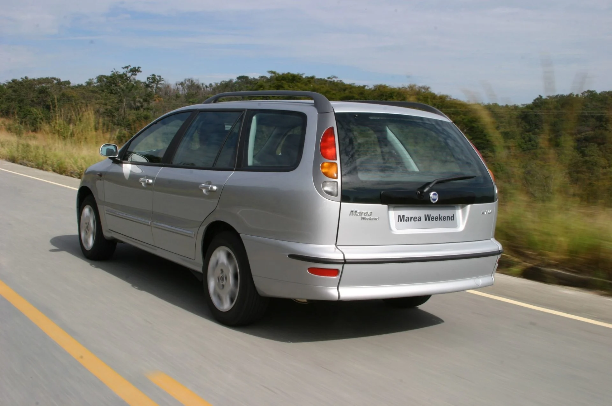

Fiat Marea
O Fiat Marea virou uma verdadeira lenda dos anos 2000. Com o lendário 2.0 20V, visual marcante e desempenho surpreendente, conquistou os apaixonados por carros e ganhou uma das reputações mais famosas da história automotiva brasileira.
Ficha Técnica
Ano
1998 - 2007
Motor
1.8 | 16v / 2.0 | 20v / 2.4 | 20v
Potência
106 - 182 cv
Câmbio
Manual / Automático
Tração
Dianteira
Carroceria
Sedã / Station Wagon
Combustível
Gasolina / Flex
FIPE
R$ 7.000 ~ R$ 44.000